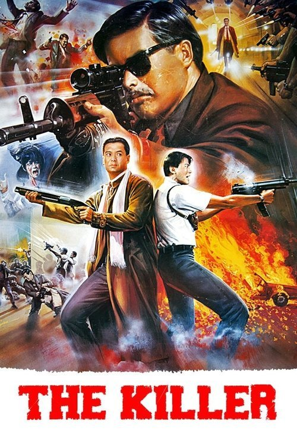

The Killer (El asesino) (1989)

Plataforma: Max
Puntuación IMDb: 7.1/10
Duración: 1h 47m
Género: Thriller de acción
Sinopsis Rápida
Un asesino a sueldo, implacable y misterioso, se embarca en una peligrosa misión que pondrá a prueba sus habilidades y su propia moral, desencadenando un juego del gato y el ratón con consecuencias devastadoras.
Sinopsis Detallada
{{SINOPSIS_EXTENDIDA}}
¿Por qué tenés que verla?
- Experimenta la visceral y estilizada violencia de John Woo, un maestro del género.
- Descubre la icónica banda sonora y las escenas de acción coreografiadas con precisión milimétrica.
- Su influencia en el cine de acción posterior es innegable, con escenas que se han convertido en clásicos.
- Un protagonista enigmático y moralmente ambiguo que te mantendrá al borde del asiento.
Idea Extra
Análisis comparativo del estilo de John Woo en 'The Killer' con sus otras películas icónicas.